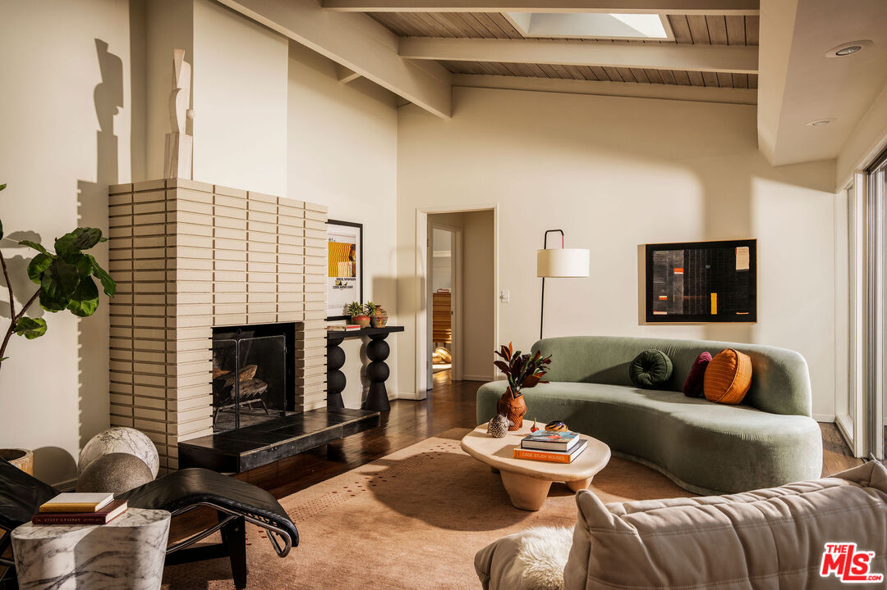
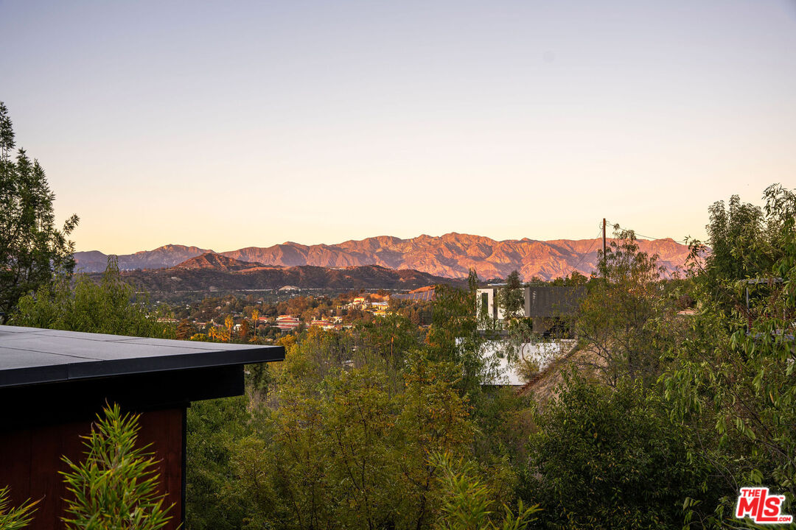
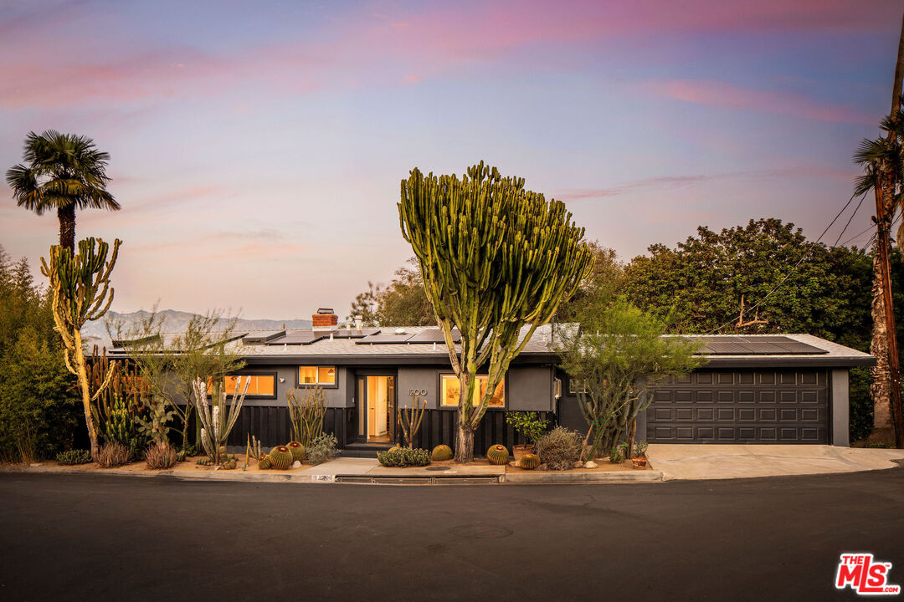
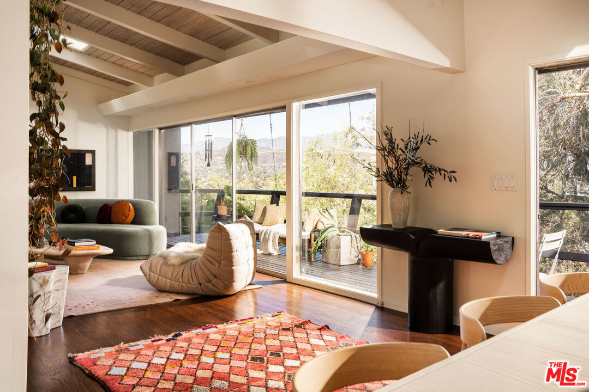

Obsession No. 022Mount Washington · Los Angeles
1200 Olancha Dr
The mountain view is beautiful, but it is the light moving through those original beams and all that glass that got me.
Why it made the edit
“The views are the first thing you see. The beams and the light are why I kept looking.”
I keep coming back to the way this house holds the light. It comes in through the skylights, slips past the clerestory windows, and lands on the original beams in a way that makes the whole main room feel different from one minute to the next.
The ceiling has that warm, slightly rough midcentury texture you cannot fake, and the glass keeps pulling the hills right into the room.
Then there are the views. From the living room, dining room, kitchen, primary bedroom, and the two decks, you get that wide Mount Washington mix of trees, foothills, and mountains. At night, the primary looks out at the lights across the hills. It is not just a view house; it is a house that gives the view somewhere to live.
Built in 1958 and carefully updated, it still knows what it is. There is a brick fireplace, vaulted ceilings, a lower-level suite with its own entrance and kitchenette, a fire-pit patio under the trees, and a two-car garage with direct entry, which is no small thing up here.
Four bedrooms, three baths, and 2,016 square feet, listed at $1,685,000. The views are the first thing you see. The beams and the light are why I kept looking.



Want to see it in person?
Curious about this one?
Let’s talk.
Listed by Alana Gospodnetich, Compass & William Schwartz, Figure 8 Realty. House of Zonshine does not represent this listing. Property details are from listing information and public sources and should be independently verified.